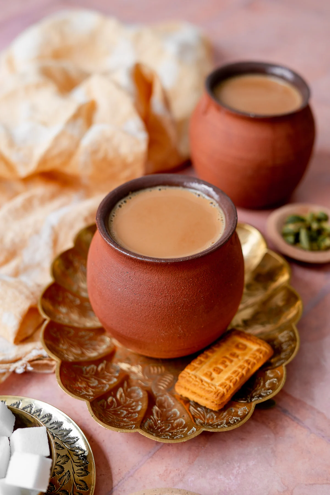

How to Make a Perfect Cup of Masala Chai

Ingredients
Instructions
- 1. Boil water in a pot on the stove on medium-high
- 2. Place the sauf (fennel seeds), elaichi (cardamom), cinnamon stick, and cloves in the water and allow to boil.
- 3. Once boiling add chai patti and continue to boil for two minutes.
- 4. After two minutes, add milk to boiling water.
- 5. The tea will soon rise to the top of the pot after two minutes and turn off the stove.
- 6. Pour tea through a strainer into a cup or tea kettle.
- 7. Add sugar if you would like and enjoy with a tea biscuit!